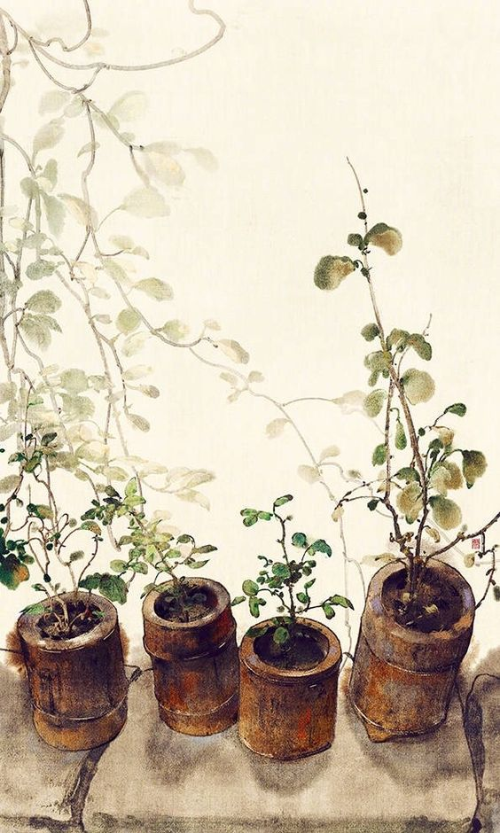

Welcome to My Digital Garden
 huh... how did you find yourself here?anyways, welcome
(❁´◡`❁)
# Introduction
According to Ness Labs, a digital garden is an"online space at the interesection of a notebook and a blog, where digital gardeners share seeds of thoughts to be cultivated in public."
... which will only be half-true for this space.
Originally I wanted to add my obsidian notes, but that didn't go so well, so now I'm just left with a weird looking blog that probably won't be updated for another decade.
feel free to browse the three-and-a-half posts until you get bored.
i still don't know how you managed to find yourself in this weird place...
(○｀ 3′○)